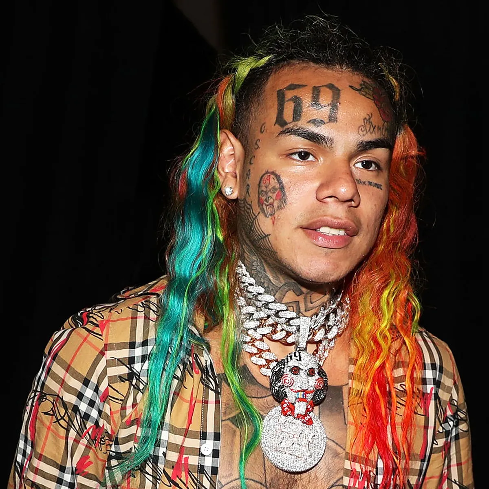
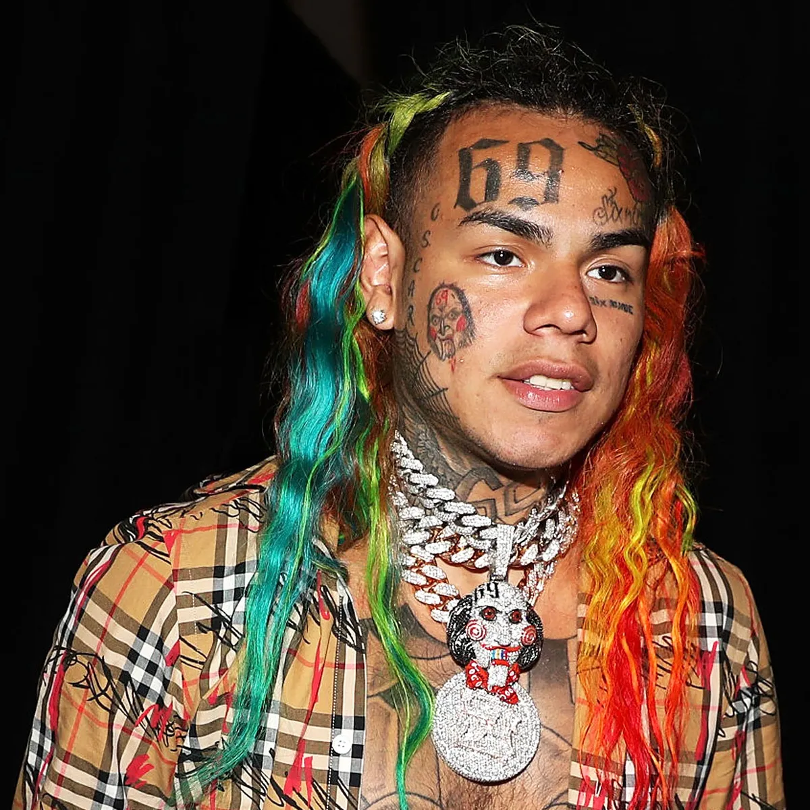
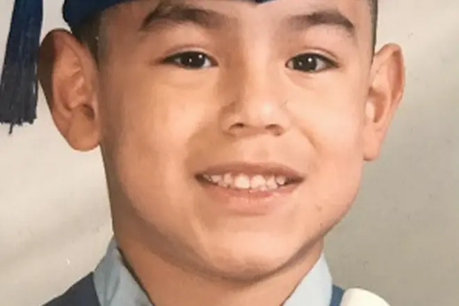
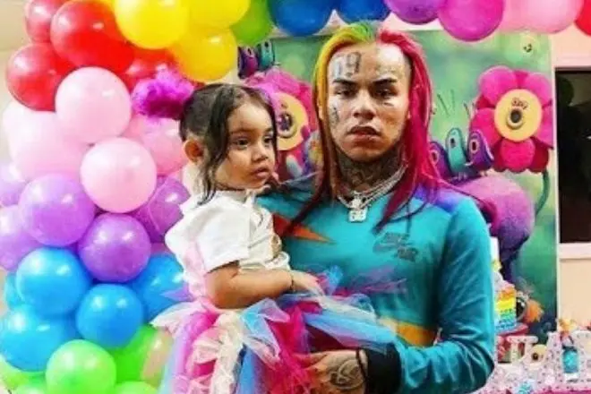

Кто такой 6ix9ine
6ix9ine – американский рэпер, настоящее имя которого – Даниель Эрнандеc (Daniel Hernandez). Родился 8 мая 1996 года в окрестности Бушуик, округ Бруклин, Нью-Йорк, США. На данный момент 6ix9ine'у 25 лет.
Его музыкальное творчество отличается агрессивным стилем чтения рэпа, а противоречивый образ – радужными волосами, множеством татуировок, конфликтами с известными личностями и проблемами с законом.
 

Фото 6ix9ine'а
Родившийся в Бруклине Даниэль Эрнандес стал известен после релиза Gummo. Песня стала народным хитом, заняв 12 место в списке Billboard Hot 100. Даниэль продолжил заниматься музыкой.
Биография
Мать рэпера по национальности мексиканка, отец – выходец из Пуэрто-Рико. Семья жила настолько бедно, что из развлечений у Даниэля были только друзья на улице, а папа изредка, сэкономив пару долларов на еде, отправлял сына в кинотеатр, чтобы хоть как-то развить в мальчике любовь к искусству.
6ix9ine в детстве
Эрнандеса выгнали из школы, когда он учился в восьмом классе. В 2010 году недалеко от дома был застрелен его отчим, поэтому вскоре Эрнандес начал работать в кафе и продавать марихуану, чтобы финансово помочь своей матери, страдающий диабетом.
В биографии рэпера – не одна страница, связанная с арестами и тюремным заключением. Парень, помимо торговли запрещенными веществами, обвинялся в нападении на человека. Эрнандеса обязали наблюдаться у психиатра, приговорили к 300 часам общественных работ. Чтобы избежать вторичного попадания за решетку, Даниэль пошел на сделку со следствием, пообещав получить документ о среднем образовании, ведь школу-то он так и не закончил. Правда, к чему в итоге пришли стороны, осталось неизвестным.

Текаши в подростковом возрасте
В поисках жизненной правды Эрнандес обратился к уличной группировке - банде Bloods, за что позднее ему досталось от коллеги по рэперскому цеху Джейсона Тейлора, известного как The Game. Как Текаши69 пояснил в интервью каналу Cloud music, там он просто-напросто искал единомышленников, разделявших его позицию, что в гибели отца виновато общество.
Личная жизнь
Чем живет 6ix9ine, если не дает концерт и не вступает в очередную перепалку, в подробностях не известно. Даниэль растит дочь, хотя мать ребенка не является женой исполнителя. О девушке музыкант ничего не рассказывает.
Текаши69 со своей дочерью
Певец с сочувствием относится к детям, которых обижают сверстники. Эрнандес даже присоединился к группе поддержки под названием Scum Gang 69, которая встает на защиту обиженных ребят. В готовую идеологию сообщества 6ix9ine интегрировал собственную позицию, которая заключалась в том, чтобы сделать стиль жизни маргиналов популярным. Даниэль хотел стать голосом тех детей, что не могли заявить о себе, и, как следствие, это положило начало его собственной борьбе за право быть услышанным.
Свободное время 6ix9ine проводит за приставкой Fifa или играет в спортивные игры. В одежде Эрнандес также предпочитает спортивный стиль. Исполнитель не может похвастаться атлетической фигурой (вес – 75 кг, рост – 172 см), зато тело Даниэля сплошь покрыто тату, в том числе любимым изображением 69.
Похищение
В этом видео Текаши рассказывает про его похищение: